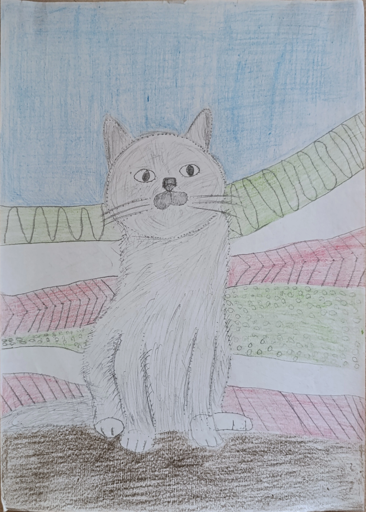
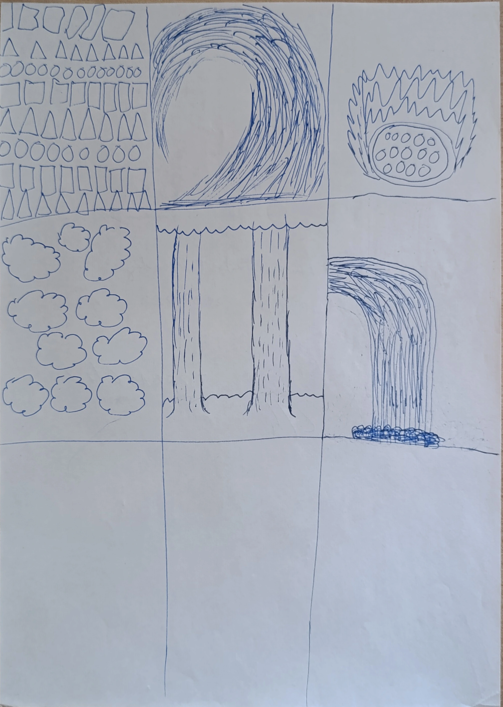
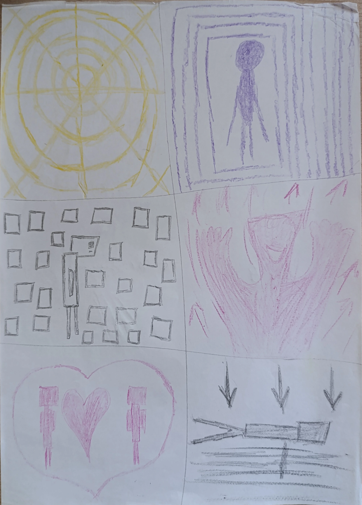
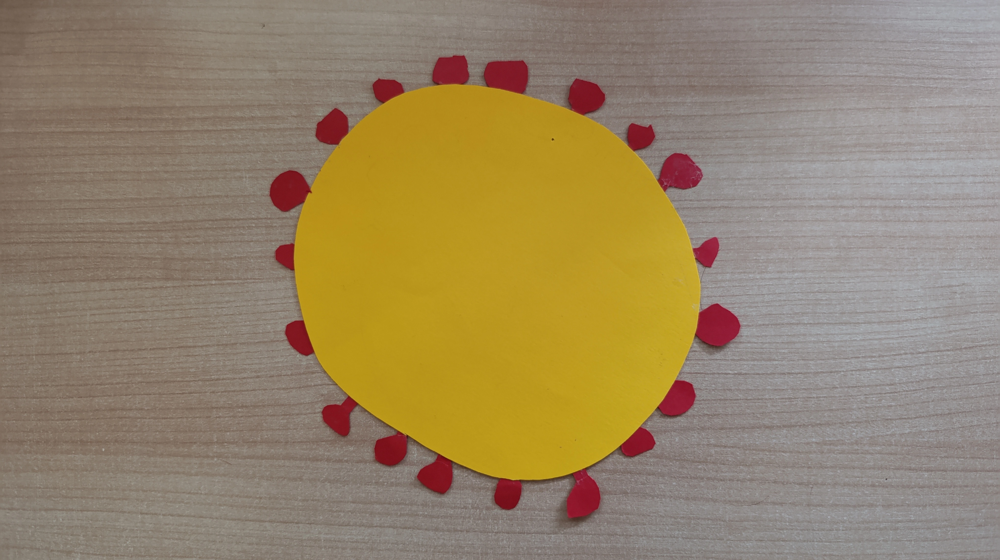
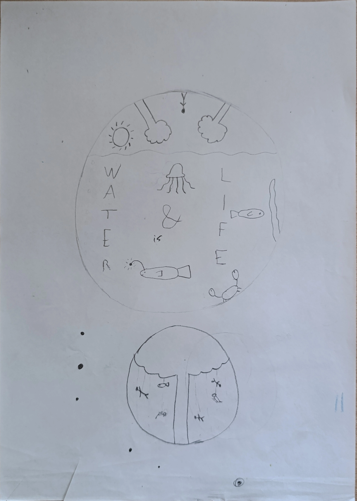
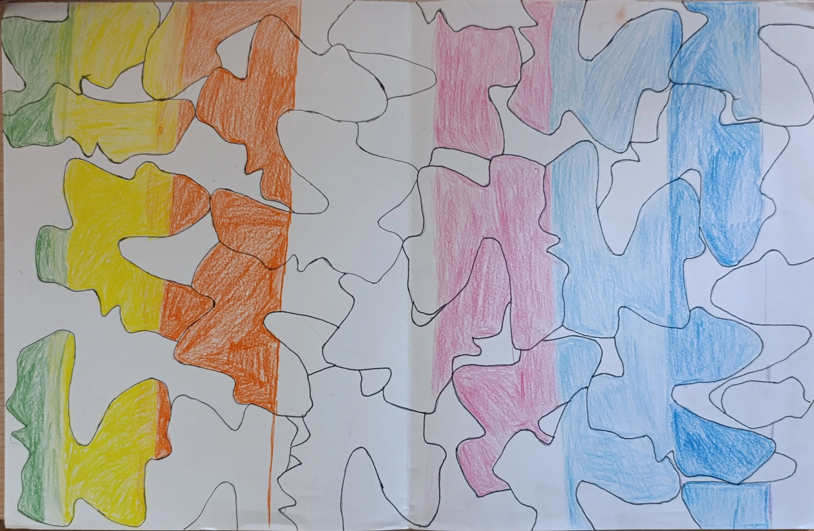
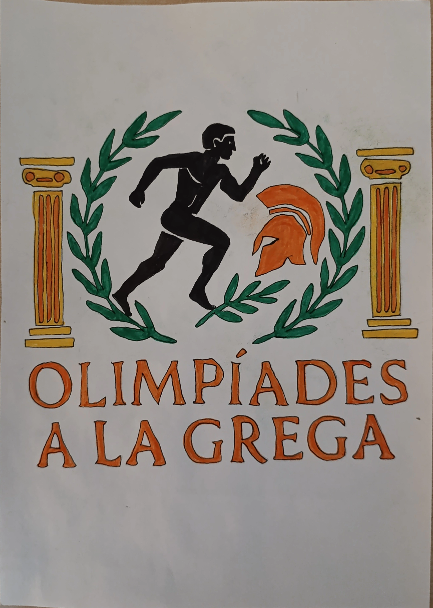
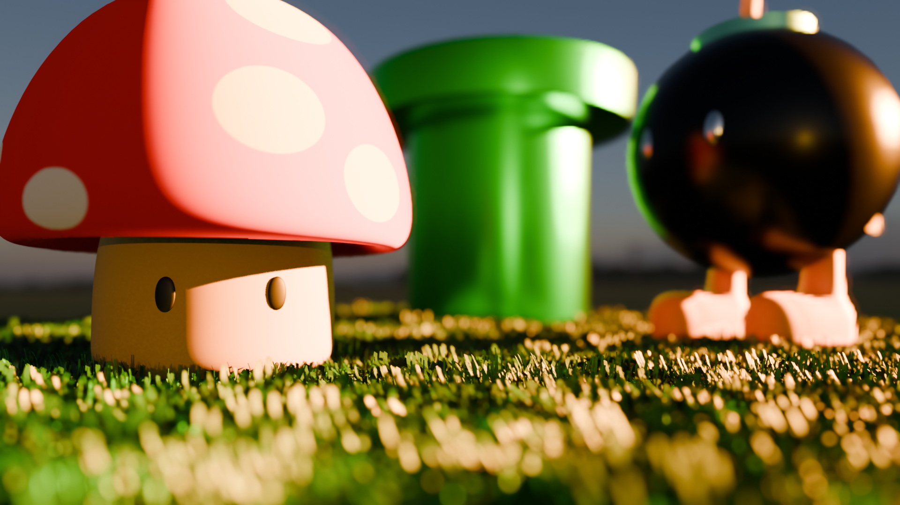
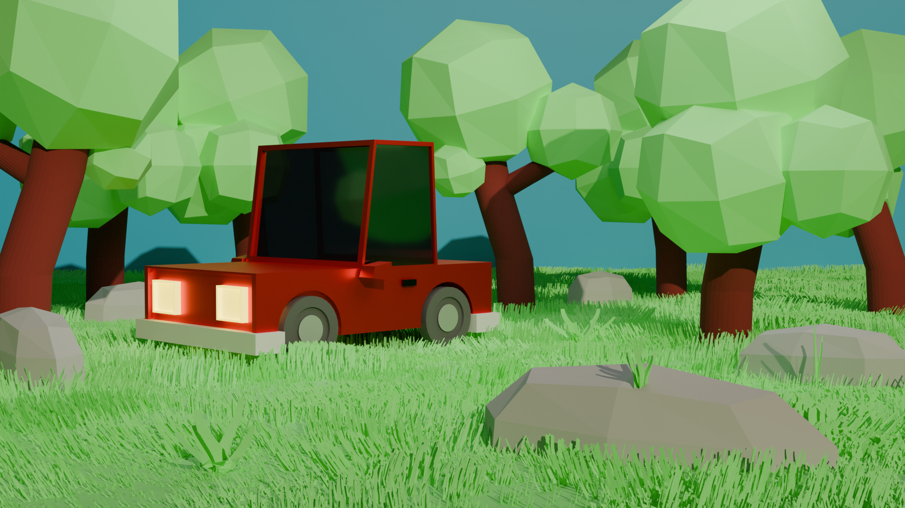

Control interdimensional
Mostra't al món
Moix partisà
Lluitava per menjar, per una manta calenta, i per fer fora els humans sorollosos del seu sofà. Segurament es va unir als partisans només perquè li oferien sardines.

Interpretació de textures

Interpretació d'emocions

Recreació del pneumococ
Part del projecte Marató de TV3 2024
Recreació del Coronavirus
Part del projecte Marató de TV3 2024

Esbós del logo "Water is Life"

Portal a un món desconegut
Art abstracte amb formes geomètriques
Obra abstracta
Feta en grup

Logo per a les Olimpiades a la Grega

El món de Mario
Render 3D fet en Blender

El món de Mario (Animat)
Animació 3D feta en Blender
Coxtxe a la natura
Render 3D fet en Blender
